15日目～僕たちは赤道に立つ～
レンタカーを失った時点で、赤道まで行くことはあきらめかけていたが、ふとブキティンギの町からレンタバイクを借りて行こうじゃないかという話になった。ただし、現在インドネシアではツーリスト向けの免許証の発行が行われておらず、国際免許証も使えないので無免許運転になってしまう。しかし、万が一警察官につかまってしまっても、２００円程度の賄賂を渡すことで見逃してもらえるという情報は仕入れていたので問題はないと判断した。
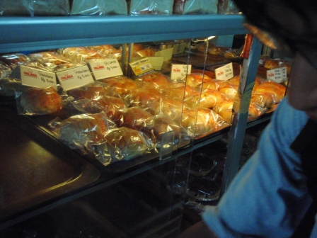
朝飯はパン屋さんで調達。
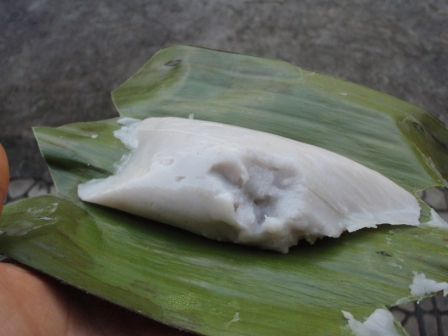
パン屋さんではパンのほかに、ココナッツミルクから作られたものと思われるヨウカンのようなお菓子も買った。
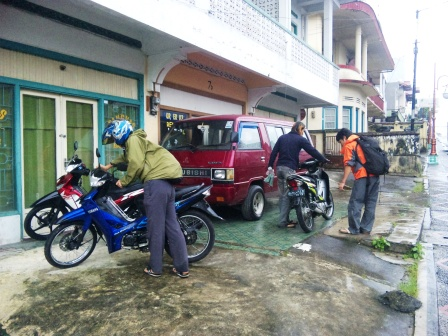
朝宿を出た時から雲行きはあまり良くなく、レンタバイクを借りようとしたときポツポツと雨が降り出してしまった。しばらくカフェレストランで時間をつぶし、雨が小雨になってきたのでブキティンギの町から距離にして70km北東にある赤道直下を目指す。借りたバイクはインドネシアの各都市で見てきたような一般的なもので、どれも日本製。インドネシアはバイク社会で、日本製のバイクがほとんどだ。しかし、種類は日本とは異なり、カブの足回りにスクーターの外装といった感じ。日本のカブをどうしてこのようなデザインにしないのだろうかと思った。トランスミッションはカブと同様クラッチレスロータリー式マニュアル。排気量は125ccで日本の原付2種(ピンクナンバー)に相当する。
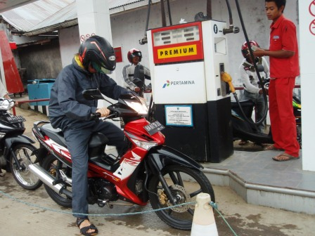
ガソリンが満タンになっていなかったのでまずは給油。1リットル45円はかなり嬉しい。ガソリンタンクもカブと同じでイスの下にある。

密林が広がるワインディングロードをひたすら北東に進んだ。
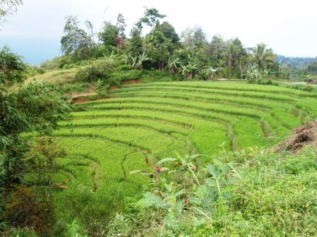
機械化とともに日本ではあまり見なくなった棚田。こちらではまだまだ牛車が活躍していた。

交通量が少なく快適に走れていたのだが、赤道からわずか南に5kmの地点で心配していた警察の検問が…。ポケットの中には5万ルピアがしのばせてあったが、警官はとてもフレンドリー☆出身を聞かれ、ジャパンと答えるとWelcomeと握手までしてくれた。山部は一応取得しておいた国際免許を、中倉は日本の免許を見せたが、大井は免許に相当するものは持ってきていなかった。しかし警官は本当はインドネシアではこういうのがいるんだよ、と現地の免許証を見せるだけで、さあ通りなさいと何もおとがめはなかった。

検問現場から走ること数分。僕たちはついに、ゲートのある赤道の真下へと到着した。バイクを降りて感慨に浸っていると、おじさんがシャツを持ってきてアピール。ここでしか買えないような赤道をモチーフにしたプリントTシャツだったので3人とも違う色のものを購入し、記念撮影。

まだお昼前だったので太陽が南中する時刻を待つのも暑くて退屈なのでもう少しバイクを北東へ走らせ、ボンジョール市街を少し観光。

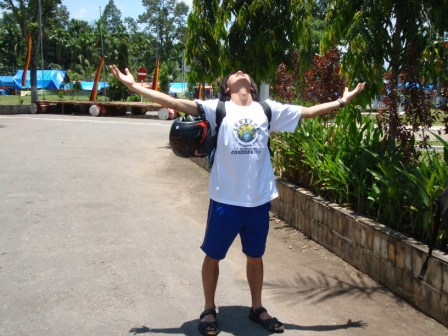
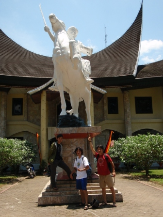
そして正午、再び赤道直下に戻ってきた。付近には記念公園のようなものがあり、園内には白線で赤道が示されていた。これをまたいで記念撮影。見ての通り、影が自分の真下にしかない。ここまでの道のりは長かった…。
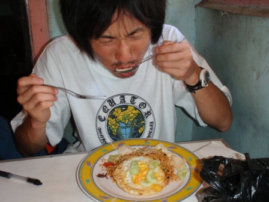

赤道の次に目指すのはブキティンギから西へ50kmほどの距離にあるマニンジャウ湖。赤道からはいったんブキティンギの町まで戻ることになる。昼食は赤道から少し南に行った食堂で食べた。クーラーはなかったが、日陰に入ってしまえば意外に過ごしやすい。日が当たると地面からの照り返しも激しく、焼けるような暑さだった。

昼食後のブキティンギまでの道中、大井のバイクのガソリンが切れるというトラブルが発生。付近にはガソリンスタンドはなく、記憶では10kmほど行かねばガソリンスタンドはなかった。山部とKENでガソリンスタンドに行き、何かガソリンを入れるものはないかと尋ねると、ごみ箱に捨ててあった空のペットボトルに給油してくれた。日本では絶対に許されない行いだ。

給油して復活！
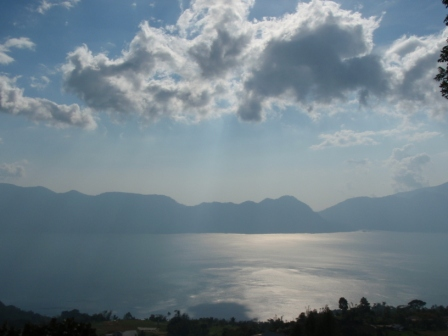
ブキティンギからワインディングロードをひたすら走って行くと、眼下に太陽を反射した美しい湖を見下ろせるポイントについた。これがマニンジャウ湖だ。


先ほどのポイントからマニンジャウ湖の湖岸までは44のつづら折りの道を下って行く。各コーナーには何番目かを示す看板がたっていて面白かった。そして、この道沿いには多数のサルが出没した。

湖岸に到着。もし水がきれいだったならば泳ごうと考えていたが、魚の死骸が浮いており泳ぐ気分にはさせてくれなかった。

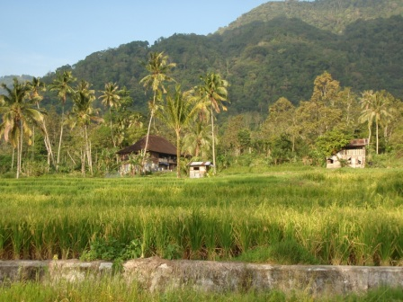
美しいマニンジャウ湖と、熱帯雨林。

44のつづら折りの道を上り返すと、夕日とまでは行かないが少し空が赤くなっていた。

やはりサルたちはあちこちに出没。
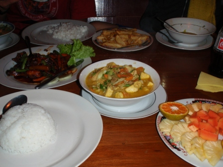
出発地点のカフェレストランでバイクを返却後、夕食。この豪華さで一人300円程度。ブキティンギは観光の町だけあって飲食店のグレードは高めだった。
翌日へ